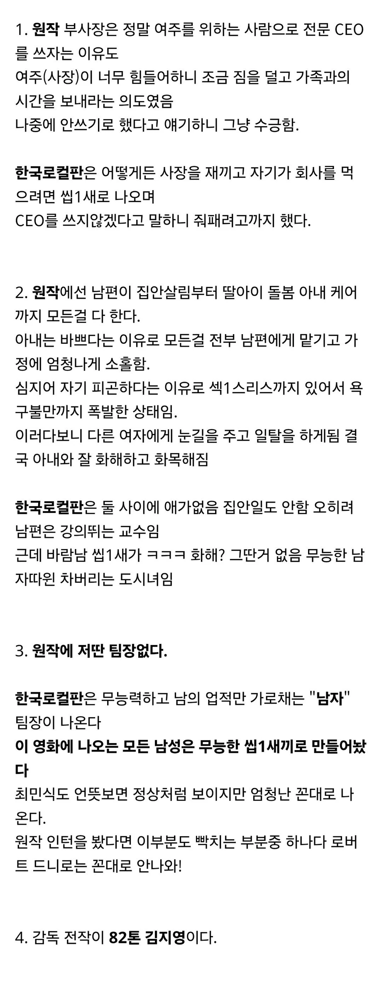

이거 개봉하고 봤는데 영화가 초중반부 순수 노잼이라 존나 졸리던데
원작에서도 다른 남자 인턴들이 좀 무능하게 나오긴 하지만 그건 현대 사회초년생이면 남녀가리지 않고 나오는 인턴이라는 위치상 그렇게 나오는거지 나중에 각자 그들만의 장점을 찾고 그들이 연계하면 일처리도 잘하는 무능하지 않은 그저 사회 초년생 느낌이라 그런거다라는걸 보여주는 대목인데 그걸 그냥 남자 무능해! 내가 더 나아! 로 끝냈다는거내
뭐임? 이거 AI로 각본짜서 누가 유흥거리로 만든영화 아니었고 진짜 개봉작이었음?